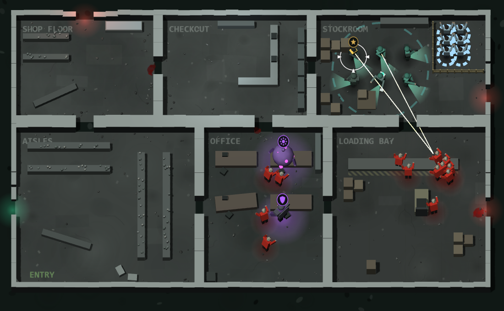
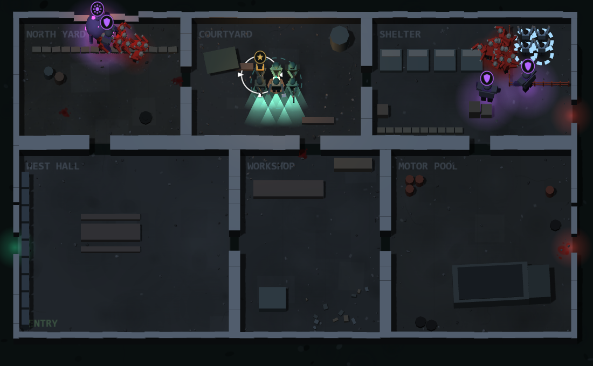

<title>The Road Home Walkthrough</title>
<meta name="claude:viewport-fit-sides" content="cover">
<link rel="stylesheet" href="https://fonts.googleapis.com/css2?family=Barlow+Condensed:wght@500;700&family=IBM+Plex+Sans:wght@400;600&family=IBM+Plex+Mono:wght@500&display=swap">
<style>
/* Layout: one column field manual, dark like the game; tables and figures break out to a wider measure */
:root{
  --bg:#0f1513; --panel:#16201c; --line:#2a3631; --fg:#d9e0dc; --mute:#93a29b;
  --gold:#d6ad55; --green:#8dbb72; --red:#c9473b; --teal:#61d4cf;
  --display:"Barlow Condensed","Arial Narrow",sans-serif;
  --body:"IBM Plex Sans",system-ui,sans-serif;
  --mono:"IBM Plex Mono",ui-monospace,monospace;
  color-scheme:dark;
}
body{background:var(--bg);color:var(--fg);font:16px/1.6 var(--body);padding-inline:max(16px,env(safe-area-inset-left,0px)) max(16px,env(safe-area-inset-right,0px));padding-block:0 64px}
main{max-width:860px;margin:0 auto}
.prose{max-width:66ch}
header{padding-block:48px 24px;border-bottom:1px solid var(--line);margin-bottom:8px}
.eyebrow{font:500 13px var(--mono);letter-spacing:.12em;text-transform:uppercase;color:var(--gold);margin:0}
h1{font:700 clamp(40px,8vw,68px)/1 var(--display);text-transform:uppercase;letter-spacing:.01em;margin:10px 0 14px;text-wrap:balance}
h2{font:700 30px/1.1 var(--display);text-transform:uppercase;margin:48px 0 10px;text-wrap:balance}
h3{font:700 20px/1.2 var(--display);text-transform:uppercase;letter-spacing:.03em;margin:28px 0 6px;color:var(--gold)}
p{margin:0 0 12px}
a{color:var(--teal)}
.lede{font-size:18px;color:var(--fg)}
.mute{color:var(--mute)}
code,.mono{font-family:var(--mono);font-size:.88em}
.goal{display:grid;grid-template-columns:repeat(auto-fit,minmax(170px,1fr));gap:10px;margin:20px 0 0;padding:0;list-style:none}
.goal li{background:var(--panel);border:1px solid var(--line);padding:12px 14px}
.goal b{display:block;font:700 15px var(--display);text-transform:uppercase;letter-spacing:.06em;color:var(--gold)}
.goal span{font-size:14px;color:var(--mute)}
.scroll{overflow-x:auto;margin:14px 0}
table{border-collapse:collapse;width:100%;min-width:520px;font-size:15px}
th,td{text-align:left;padding:9px 10px;border-bottom:1px solid var(--line);vertical-align:top}
th{font:500 12px var(--mono);letter-spacing:.1em;text-transform:uppercase;color:var(--mute)}
td:first-child{font-weight:600;white-space:nowrap}
td.num{font-family:var(--mono);color:var(--gold);white-space:nowrap}
figure{margin:20px 0}
figure img{display:block;width:100%;border:1px solid var(--line)}
figcaption{font-size:14px;color:var(--mute);margin-top:8px}
.legend{display:flex;flex-wrap:wrap;gap:8px 18px;margin:10px 0 0;padding:0;list-style:none;font-size:14px}
.legend li{display:flex;align-items:center;gap:8px}
.dot{width:14px;height:14px;border-radius:50%;flex:none}
.loop{width:100%;height:auto;display:block}
.loop text{font-family:var(--mono);font-size:13px;fill:var(--fg)}
.loop .t{font-family:var(--display);font-weight:700;font-size:19px;letter-spacing:.04em;fill:var(--gold);text-transform:uppercase}
.loop .s{fill:var(--mute);font-size:12px}
.card{background:#1a1414;border:1px solid #5a2b26;padding:16px 18px;max-width:520px;margin:16px 0}
.card .k{font:500 12px var(--mono);letter-spacing:.12em;text-transform:uppercase;color:var(--red)}
.card .h{font:700 26px/1.1 var(--display);text-transform:uppercase;margin:4px 0 2px}
.card .opts{display:grid;grid-template-columns:repeat(3,1fr);gap:8px;margin-top:12px}
.card .opts div{border:1px solid var(--line);background:var(--panel);padding:8px;font-size:14px}
.card .opts b{display:block;font:700 16px var(--display);text-transform:uppercase}
.bar{height:4px;background:var(--line);margin-top:12px}.bar i{display:block;height:100%;width:62%;background:var(--red)}
ol.plan{padding-left:22px}ol.plan li{margin-bottom:8px}
.tips{display:grid;grid-template-columns:repeat(auto-fit,minmax(240px,1fr));gap:12px;padding:0;list-style:none}
.tips li{border-top:2px solid var(--gold);background:var(--panel);padding:12px 14px;font-size:15px}
.tips b{display:block;margin-bottom:2px}
@media (max-width:520px){.card .opts{grid-template-columns:1fr}}
</style>

<main>
<header>
  <p class="eyebrow">Chapter 1 · Field guide · build 4.0</p>
  <h1>The Road Home</h1>
  <p class="lede prose">You are Joel. You never fire a shot yourself: you pick who goes, how loud they are, and what they do when it goes wrong. Over about 9 to 18 days you clear two buildings, bring the civilians home, and then hold your base through one night.</p>
  <ul class="goal">
    <li><b>1 · Convenience Shop</b><span>Escort the trapped civilians out</span></li>
    <li><b>2 · Cold Storage</b><span>Opens once the shop is resolved</span></li>
    <li><b>3 · The Long Night</b><span>Hold the shelter until dawn (2:30)</span></li>
  </ul>
</header>

<section class="prose">
  <h2>Play it on your phone</h2>
  <p>Open <a href="https://knighthops.github.io/zombie/">knighthops.github.io/zombie</a> in Safari, tap <b>Share → Add to Home Screen</b>, and launch it from the icon. The game always plays sideways. If you hold the phone upright, the whole game turns with it. Progress saves on the phone. <b>New campaign</b> on the Home screen starts over.</p>
</section>

<section>
  <h2>The day loop</h2>
  <p class="prose">Every day you choose one thing. The clock keeps moving whatever you choose: the infected outside a building grow overnight, and each day away wears the civilians' barricade down.</p>
  <div class="scroll">
  <svg class="loop" viewBox="0 0 820 250" role="img" aria-label="Day loop: Plan, Deploy, Road, Engage, Resolve, Build, then back to Plan. After Cold Storage, a horde clock leads to the Long Night.">
    <defs><marker id="ar" viewBox="0 0 10 10" refX="9" refY="5" markerWidth="7" markerHeight="7" orient="auto"><path d="M0 0L10 5L0 10z" fill="#93a29b"/></marker></defs>
    <g fill="#16201c" stroke="#2a3631">
      <rect x="10" y="30" width="120" height="70"/><rect x="145" y="30" width="120" height="70"/><rect x="280" y="30" width="120" height="70"/>
      <rect x="415" y="30" width="120" height="70"/><rect x="550" y="30" width="120" height="70"/><rect x="685" y="30" width="125" height="70"/>
    </g>
    <text class="t" x="24" y="60">Plan</text><text class="s" x="24" y="82">pick the day</text>
    <text class="t" x="159" y="60">Deploy</text><text class="s" x="159" y="82">team · ammo · route</text>
    <text class="t" x="294" y="60">Road</text><text class="s" x="294" y="82">one event, one call</text>
    <text class="t" x="429" y="60">Engage</text><text class="s" x="429" y="82">reach · hold · escort</text>
    <text class="t" x="564" y="60">Resolve</text><text class="s" x="564" y="82">saved · lost · parts</text>
    <text class="t" x="699" y="60">Build</text><text class="s" x="699" y="82">spend parts</text>
    <g stroke="#93a29b" stroke-width="1.5" fill="none" marker-end="url(#ar)">
      <path d="M130 65H143"/><path d="M265 65H278"/><path d="M400 65H413"/><path d="M535 65H548"/><path d="M670 65H683"/>
      <path d="M747 100V140H70V102"/>
    </g>
    <text class="s" x="300" y="133">next day · or Scavenge / Rest instead of a mission</text>
    <rect x="280" y="175" width="255" height="56" fill="#1a1414" stroke="#5a2b26"/>
    <text class="t" x="294" y="200" style="fill:#c9473b">The Long Night</text>
    <text class="s" x="294" y="220">after Cold Storage · 2 prep days</text>
    <path d="M610 100V203H537" stroke="#c9473b" stroke-width="1.5" fill="none" marker-end="url(#ar)"/>
  </svg>
  </div>

  <h3>What a day can be</h3>
  <div class="scroll"><table>
    <thead><tr><th>Choice</th><th>What you get</th><th>What it costs</th></tr></thead>
    <tbody>
      <tr><td>Mission</td><td>Civilians home, parts, +20 rounds per person saved</td><td>Ammo, meds, injuries, deaths</td></tr>
      <tr><td>Scavenge</td><td>+60–100 rounds. A clean run also gives +1 part and maybe a med</td><td>Barricade −15. Risk: 60% clean, 30% hurt, 10% one killed. The odds get worse each time you repeat it</td></tr>
      <tr><td>Rest</td><td>Heals the wounded and clears <b>Tired</b></td><td>Barricade −15</td></tr>
      <tr><td>Build</td><td>One upgrade a day, on top of the day's choice</td><td>Parts</td></tr>
    </tbody>
  </table></div>
  <p class="prose mute">The barricade never drops below 40. If a day away would push it below that, one civilian dies instead. The button always tells you which will happen.</p>
</section>

<section>
  <h2>Before you deploy</h2>
  <ul class="prose">
    <li><b>Team.</b> Six troopers. Escorts can't shoot, so bring enough guns for the walk out. Tired troopers hit 15% less, so rest them.</li>
    <li><b>Ammo.</b> You start the chapter with 400 rounds, and a mission uses about 150–200. Take the recommended loadout unless you have a plan.</li>
    <li><b>Recon.</b> It costs barricade, but it shows the map, removes a few infected, and flags crawlers and bloaters before you go.</li>
    <li><b>Route.</b> On foot is silent. The vehicle is faster but arrives with +15 noise.</li>
  </ul>
  <h3>On the road</h3>
  <p class="prose">One event per trip, each with its odds shown: a pharmacy with its shutter half up, a herd drifting your way, a man waving from a roof. Small gambles, either way. Helping someone on the road counts as a rescue.</p>
</section>

<section>
  <h2>Inside the building</h2>
  <figure>
    
    <figcaption>The hold. The squad has reached the civilians in the checkout and has to keep the room for 14 seconds while they get ready. That noise wakes the rooms next door.</figcaption>
  </figure>
  <ul class="legend" aria-label="Map legend">
    <li><span class="dot" style="background:#61d4cf"></span>Squad: teal, with a cone showing which way each trooper faces</li>
    <li><span class="dot" style="border:2px dashed #a9c8e8;background:transparent"></span>Civilians: dashed ring</li>
    <li><span class="dot" style="border:2px solid #ff493d;background:transparent"></span>Downed: pulsing red ring</li>
    <li><span class="dot" style="background:#c9473b;border-radius:2px;transform:rotate(45deg)"></span>Infected: red</li>
    <li><span class="dot" style="background:#9b6bd6;border-radius:3px"></span>Elites: purple, with a glow</li>
  </ul>

  <h3>The three phases</h3>
  <ol class="plan prose">
    <li><b>Reach.</b> Push room by room to the civilians. Doors are choke points: the infected come through them one at a time.</li>
    <li><b>Hold.</b> 14 seconds in their room. This is the loudest moment of the mission.</li>
    <li><b>Escort.</b> Walk them to the exit. Every 18 seconds a few more infected find the column.</li>
  </ol>

  <h3>Your controls</h3>
  <div class="scroll"><table>
    <thead><tr><th>Control</th><th>Use it to</th></tr></thead>
    <tbody>
      <tr><td>Stance</td><td><b>Defensive</b> holds and spots crawlers. <b>Controlled</b> is the default. <b>Aggressive</b> pushes fast and loud.</td></tr>
      <tr><td>Fire at will</td><td>Turn it off to stay quiet. Holding fire roughly halves your noise.</td></tr>
      <tr><td>Advance</td><td>Send the squad to a room. Tap the room on the map.</td></tr>
      <tr><td>Seal door</td><td>Wedge a door shut for about 20 seconds. Tap the door.</td></tr>
      <tr><td>Focus · Medkit</td><td>Kill an armoured or bloater at range, or patch the worst-hurt trooper.</td></tr>
      <tr><td>Retreat</td><td>Abort. You keep who you have.</td></tr>
    </tbody>
  </table></div>
  <p class="prose">Orders cost <b>command points</b>. You get one back every 12 seconds while Joel is on his feet. If Joel goes down, regen stops. <b>Noise</b> brings waves at 30, 60 and 90, so watch the meter and go quiet before it ticks over.</p>

  <h3>Crises</h3>
  <p class="prose">When something goes wrong (a trooper down, a bloater closing, the barricade failing), the game pauses and asks you to choose. Every option shows its cost. If the timer runs out, the squad leader picks a safe default.</p>
  <div class="card" aria-label="Example crisis card">
    <div class="k">Crisis</div>
    <div class="h">Bloater closing</div>
    <div class="mute">On David · office · bursts up close</div>
    <div class="opts">
      <div><b>Focus fire</b>Kill it at range</div>
      <div><b>Fall back</b>Free · to stockroom</div>
      <div><b>Hold</b>It bursts on the line</div>
    </div>
    <div class="bar"><i></i></div>
  </div>
</section>

<section>
  <h2>The infected</h2>
  <div class="scroll"><table>
    <thead><tr><th>Type</th><th>Threat</th><th>Answer</th></tr></thead>
    <tbody>
      <tr><td>Shambler</td><td>Slow and numerous. Drawn by noise</td><td>Choke them at a door</td></tr>
      <tr><td>Runner</td><td>Fast. Comes in later waves and runs down civilians</td><td>Keep guns free on the escort</td></tr>
      <tr><td>Armoured</td><td>Shrugs off unfocused fire</td><td>Focus</td></tr>
      <tr><td>Bloater</td><td>Bursts up close and hurts everyone near it</td><td>Focus fire at range, or fall back</td></tr>
      <tr><td>Screamer</td><td>Adds noise and wakes nearby rooms</td><td>Kill it first</td></tr>
      <tr><td>Crawler</td><td>Hides in a room off your route and strikes the escort</td><td>Recon or Defensive spots it. A kill before it moves drops +1 part</td></tr>
    </tbody>
  </table></div>
</section>

<section>
  <h2>Parts and upgrades</h2>
  <p class="prose">A good chapter earns about 12 parts. That's enough for three of the five upgrades, so pick the ones that fit how you play.</p>
  <div class="scroll"><table>
    <thead><tr><th>Upgrade</th><th>Parts</th><th>Effect</th></tr></thead>
    <tbody>
      <tr><td>Walls</td><td class="num">4</td><td>On the Long Night the shelter starts at 100% (70% without), with 2 ways in instead of 3. It drains slower and repairs faster</td></tr>
      <tr><td>Infirmary</td><td class="num">3</td><td>Rest heals twice as fast</td></tr>
      <tr><td>Reload bench</td><td class="num">3</td><td>+20 rounds every day</td></tr>
      <tr><td>Radio mast</td><td class="num">2</td><td>Free recon</td></tr>
      <tr><td>Drill</td><td class="num">2</td><td>Rookies stay quiet</td></tr>
    </tbody>
  </table></div>
  <h3>How parts come in</h3>
  <div class="scroll"><table>
    <thead><tr><th>Source</th><th>Parts</th></tr></thead>
    <tbody>
      <tr><td>Building resolved, half or more saved</td><td class="num">+3 + bonus</td></tr>
      <tr><td>Building resolved, fewer than half saved</td><td class="num">+1</td></tr>
      <tr><td>Nobody saved</td><td class="num">0</td></tr>
      <tr><td>Reaching the civilians (their cache)</td><td class="num">+1</td></tr>
      <tr><td>Crawler killed before it moves · clean scavenge · some road events</td><td class="num">+1 each</td></tr>
    </tbody>
  </table></div>
  <p class="prose mute">Building bonuses: the shop gives a <b>Safe house</b> that halves scavenge risk. Cold Storage gives a <b>Cold room</b> that adds +1 med each rest day, and it starts the horde clock.</p>
</section>

<section>
  <h2>The Long Night</h2>
  <figure>
    
    <figcaption>A raid has broken into the shelter (top right) while the squad is still in the courtyard. Raiders go for the civilians, not for you, so get inside the shelter before the first raid lands.</figcaption>
  </figure>
  <div class="scroll"><table>
    <thead><tr><th>Fact</th><th>Value</th></tr></thead>
    <tbody>
      <tr><td>Dawn</td><td class="num">2:30</td></tr>
      <tr><td>Raids</td><td>7, one every 20s from 0:08, growing from 6 to 18 infected. Bloaters in raids 3 and 6. From raid 4 they come two ways at once</td></tr>
      <tr><td>Ammo needed</td><td class="num">about 250 rounds</td></tr>
      <tr><td>Shelter</td><td>Drains while infected are inside and repairs when the room is clear, even after a breach. While breached, a civilian dies every 10s</td></tr>
    </tbody>
  </table></div>
  <p class="prose">Bring every gun, and move into the shelter early. Ammo is your real clock: the shelter holds as long as you can keep its room clear.</p>
</section>

<section class="prose">
  <h2>A route that reaches dawn</h2>
  <p class="mute">This is the run DESIGNER used to reach Dawn in 9 days with every sheltered civilian safe. Your counts will vary, but the order is what matters.</p>
  <ol class="plan">
    <li><b>Shop, first visit.</b> Recon, go on foot, full squad. Answer every crisis. Bring out half the civilians and retreat if you run dry.</li>
    <li><b>Shop, second visit.</b> Finish it. Half or more saved earns the Safe house and +3 parts.</li>
    <li><b>Build Walls</b> as soon as you have 4 parts.</li>
    <li><b>Cold Storage.</b> Recon again. The room next to the civilians pulls toward your squad, so hold that door for 5 seconds. Take it over two visits.</li>
    <li><b>Prep days.</b> Spend the horde clock on one scavenge for ammo and one rest to clear Tired. Buy Reload bench and Drill.</li>
    <li><b>The night.</b> Six guns and 300+ rounds. Move into the shelter around 0:45.</li>
  </ol>
</section>

<section>
  <h2>When it goes wrong</h2>
  <ul class="tips">
    <li><b>Squad wiped</b>Your first wipe doesn't end the campaign. Two drifters turn up with 150 rounds and a med. A second wipe ends it.</li>
    <li><b>Joel down</b>He can't die, but each near-death leaves a scar: −20 HP and slower command points. The third scar ends the campaign.</li>
    <li><b>Out of ammo</b>Scavenge, but not twice in a row if you can help it, because the odds get worse each time. Each civilian you bring home adds 20 rounds.</li>
    <li><b>Civilians lost</b>The results list each death with its cause: a runner, a crawler, a bloater, the barricade or the retreat. Fix that next time.</li>
  </ul>
</section>
</main>
